西川 登偉 / Toui Nishikawa
Medical student / Engineer
2018 |
Graduated from Seifu nankai high school |
2018 |
Wkayama medical university faculty of medicine (2018-2024) inochi WAKAZO project core member Susanos project member inochi gakusei forum mentor |
2019 |
GramEye hardware engineer |
2020 |
wakayama medical univiersity Human pathology MD-PhD course |
2022 |
meddicmeida Q-Assist teachear "Seminar of programing for medical students" |

Skills

Artificial intelligence
JDLA deep learning for engineer
JDLA deep learning for general
Certification by Japan medical AI conference
Python 3 Basic Grammar Certification

Hardware
Please see "Works" !
Web
HTML/CSS javascript PHP
Application
Java / Swift

3D cad
Please see "Works" !
Financial management
The official Business Skill test in Bookkeeping 2nd Grade
3rd grade Certified Slilled Professional of Finantial Plannning

Statistical analysis
R programing
Photography
Photo-master 1st Grade
Design
Photoshop creater Expert
illustrator creator Expert
Hobbies
Aikido (martial arts)
Scuba diving
Snow board
Leathercraft
Photo-master level 1 (highest)
Beer
Palm reader
＜club / circle＞
Science club robot team（J.H.S.& H.S.）
Aikido club (Uni.)
preventive medicine circle (Uni.)
USMLE circle（Uni.）
clinical skills circle (Uni.)
Artificial intelligence
JDLA deep learning for engineer JDLA deep learning for general Certification by Japan medical AI conference Python 3 Basic Grammar Certification
Hardware
Please see "Works" !
Web
HTML/CSS javascript PHP
Application
Java / Swift
3D cad
Please see "Works" !
Financial management
The official Business Skill test in Bookkeeping 2nd Grade 3rd grade Certified Slilled Professional of Finantial Plannning
Statistical analysis
R programing
Photography
Photo-master 1st Grade
Design
Photoshop creater Expert illustrator creator Expert
Hobbies
Aikido (martial arts) Scuba diving Snow board Leathercraft Photo-master level 1 (highest) Beer Palm reader ＜club / circle＞ Science club robot team（J.H.S.& H.S.） Aikido club (Uni.) preventive medicine circle (Uni.) USMLE circle（Uni.） clinical skills circle (Uni.)